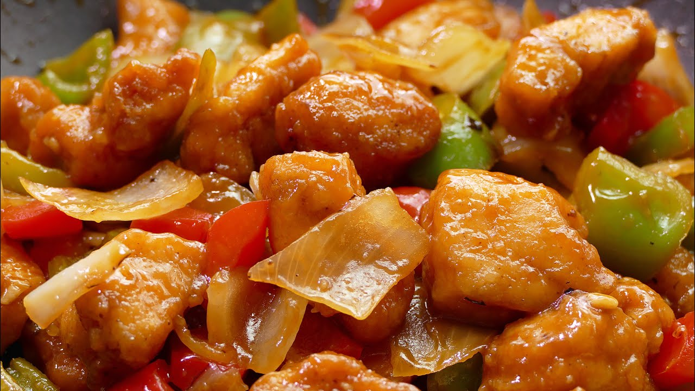

Arroz Chino Frito

Pollo Agridulce
Pollo Agridulce
Trozos de pollo fritos y luego cubiertos con una salsa agridulce hecha de vinagre, azúcar, kétchup y especias. A menudo se sirve con pimientos, cebollas y piña.Trozos de pollo fritos y luego cubiertos con una salsa agridulce hecha de vinagre, azúcar, kétchup y especias. A menudo se sirve con pimientos, cebollas y piña.

Dim Sum

Cerdo Agridulce